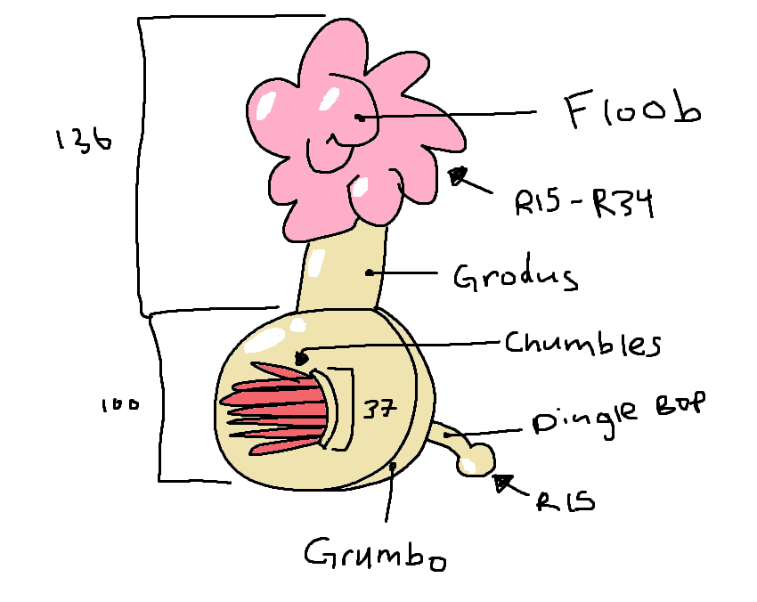

Here's an episode of "How They Do It" explaining the creation of the Plumbus!
Video Courtesy of Rick and Morty.
Video Transcription and Diagram"Today on How They Do It: Plumbuses. Everyone has a plumbus in their home. First they take the dingle bop and they smooth it out with a bunch of schleem. The schleem is then repurposed for later batches. They take the dingle bop and they push it through the grumbo, where the fleeb is rubbed against it. It's important that the fleeb is rubbed, becasue the fleeb has all the fleeb juice. Then, a schlami shows up, and he rubs it and spits on it. They cut the fleeb. There's several hizzards in the way. The blamfs rub against the chumbles, and the plubis, and grumbo are shaved away. That leaves you with a regular old plumbus." |
 |